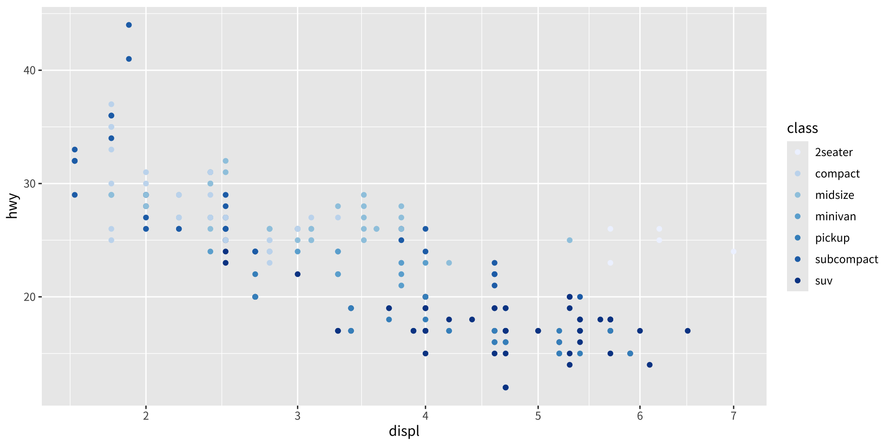
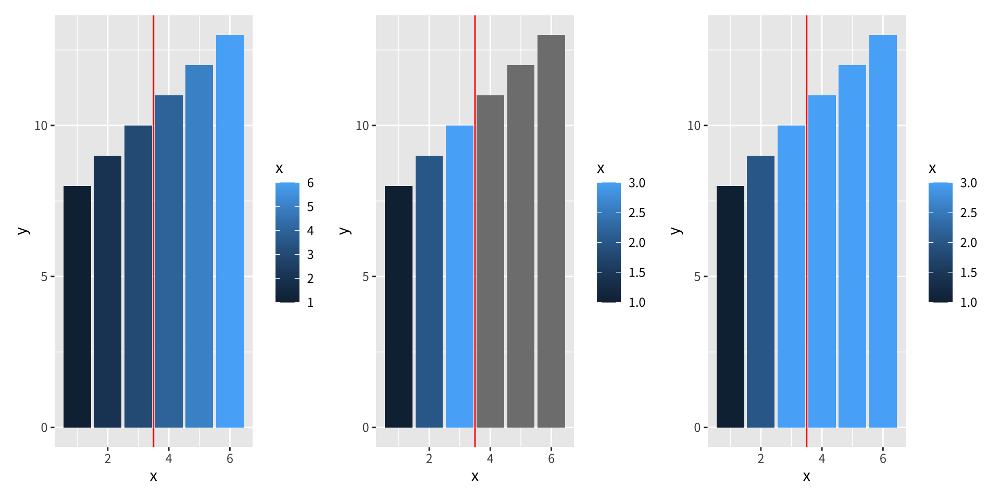
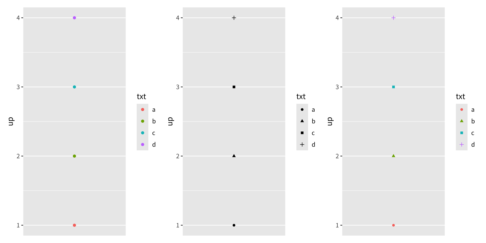
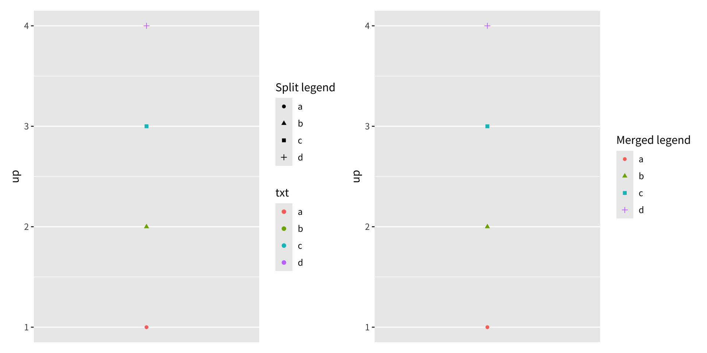
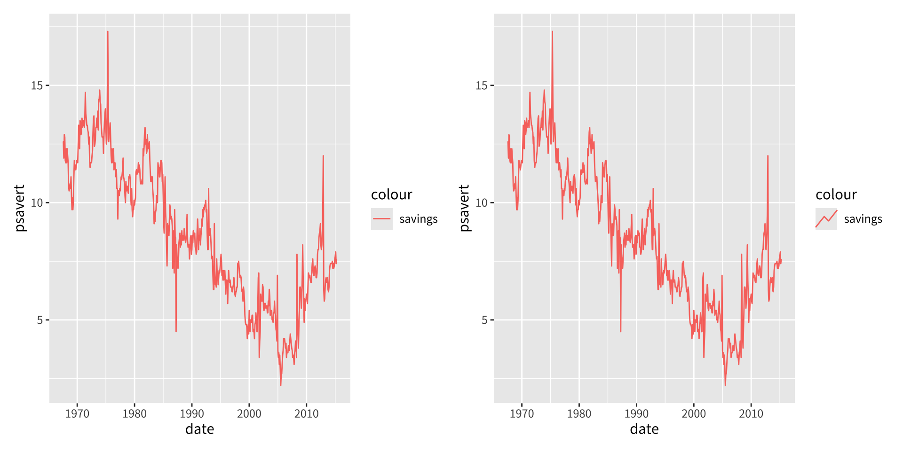

資料分析
第十四章：尺度與導引
實踐大學
2026-06-06
尺度與導引
概覽
第 10–12 章的尺度工具箱解決了實務上的視覺化問題。本章退一步，探討支撐尺度與導引的理論，並說明為位置或顏色尺度所引介的概念，其實適用於每一種美學。
本章涵蓋：
- 理論——尺度作為從資料空間到美學空間的函式，導引作為其反函式
- 尺度名稱——軸標籤與圖例標題是同一種物件
- 斷點與界限——導引所顯示的值，以及界外值的處理
- 尺度導引——各尺度類型的預設導引
- 轉換——轉換非位置的美學
- 圖例合併與分裂——以及自訂圖例鍵的符號
尺度與導引的理論
尺度與導引
形式上，尺度是一個從資料空間的某個區域（其定義域）到美學空間的某個區域（其值域）的函式。導引——軸或圖例——是其反函式：它讓你把視覺屬性讀回資料值。
軸與圖例竟是同一種東西，這可能令你意外。它們外觀差異很大，卻共享同一目的，其組成成分也彼此對應：
| 引數 | 軸 | 圖例 |
|---|---|---|
name |
標籤 | 標題 |
breaks |
刻度與格線 | 鍵 |
labels |
刻度標籤 | 鍵標籤 |
圖例在三方面比軸更複雜：
- 一個圖例可顯示來自多個圖層的多種美學（如顏色與形狀），而鍵的符號取決於所用的 geom。
- 軸總是出現在相同位置；圖例可被放在任何地方，因此需要一套全域的定位系統。
- 圖例有許多可調的細節：方向、欄數、鍵的大小。
尺度的指定
每種美學都恰好關聯一個尺度。當你寫下一個映射時，ggplot2 會默默為每種美學加上一個預設尺度：
預設取決於美學與變數類型：連續的 hwy 在 y 得到 scale_y_continuous()；離散的 class 在顏色得到 scale_colour_discrete()。
用 + 加上一個尺度，其實是覆寫該美學既有的尺度——最後一個獲勝。發生這種情況時 ggplot2 會警告你：

此處 scale_x_sqrt() 取代了預設的 x 尺度，scale_colour_brewer() 取代了預設的顏色尺度。
命名規則與基本類型
面向使用者的尺度函式遵循以三段、以 _ 分隔的命名規則：
scale- 主要美學（
colour、shape、x……） - 尺度的名稱（
continuous、discrete、brewer……）
在內部，所有尺度都屬於三種基本類型之一，各由一個你永遠不需直接呼叫的建構函式處理：
| 基本類型 | 建構函式 |
|---|---|
| 連續 | continuous_scale() |
| 離散 | discrete_scale() |
| 分箱 | binned_scale() |
尺度界限
尺度界限
尺度的界限（limits）定義了映射所定義的那塊資料空間區域。此區域依基本類型而不同：連續與分箱尺度由兩個端點定義，而離散尺度必須列舉其類別。
這帶出一個問題：對落在界限外的界外值（out-of-bounds），ggplot2 該怎麼辦？此行為由 oob 引數掌控：
scales::oob_censor()（預設）——把界外值替換為NAscales::oob_squish()——把界外值擠進範圍內

左：預設填色。中：最右三根長條落在 limits = c(1, 3) 之外，變成灰色 NA。右：oob = scales::squish 改為把它們夾進範圍內。
尺度導引
尺度導引
name 接受文字，而 guide 引數接受由導引函式建立的導引物件。每種尺度類型都有預設導引：
| 尺度類型 | 預設導引 |
|---|---|
| 連續 colour/fill | guide_colourbar() |
| 分箱 colour/fill | guide_coloursteps() |
| 位置尺度 | guide_axis() |
| 離散（非位置） | guide_legend() |
| 分箱（其他） | guide_bins() |
每個導引函式都帶有許多引數——等同於主題設定（文字顏色、大小、字型），但僅限於單一導引。那些設定在第 17 章討論。
尺度轉換
尺度轉換
尺度轉換最常見於連續位置尺度（§10.1.7），但也適用於其他美學。其目的往往是視覺強調。對於 Old Faithful 密度，平方根填色轉換能凸顯各峰周圍的低密度區：
轉換大小美學會改變它的詮釋。左圖中 z 讀作權重（越大＝群組越大）；反轉尺度後 z 讀作距離（越大＝看起來越小）：
圖例合併與分裂
合併圖例
位置尺度與軸一一對應，但非位置尺度與圖例之間的連結較鬆散：一個圖例可能取自多個圖層（合併），或一種美學可能需要多個圖例（分裂）。
ggplot2 會用最少的圖例，並把同一變數映射到不同美學者加以合併。若 colour 與 shape 都映射到同一變數，便只產生一個圖例：

要合併圖例，它們必須共享相同的 name。若你重新命名一個尺度，就要全部一起改——labs() 是個方便的做法：

你也可以用 show.legend 引數（TRUE/FALSE）強制或抑制某圖層的出現。
分裂圖例
分裂罕見得多——把一種美學映射到兩個變數通常不智，所以 ggplot2 預設不允許。ggnewscale 套件可覆寫這點：new_scale_colour() 會初始化一個全新的顏色尺度。在它之上的指令套用於第一個尺度；在它之下的套用於第二個。
a <- base <- ggplot(mpg, aes(displ, hwy)) +
geom_point(aes(colour = factor(year)), size = 5) +
scale_colour_brewer("year", type = "qual", palette = 5)
b <- base +
ggnewscale::new_scale_colour() +
geom_point(aes(colour = cyl == 4), size = 1, fill = NA) +
scale_colour_manual("4 cylinder", values = c("grey60", "black"))
圖例鍵符號
圖例鍵符號
預設情況下，圖例鍵的符號會與圖層及美學相符——彩色線顯示為彩色線段、盒鬚圖顯示為小盒鬚圖。要覆寫它，使用 key_glyph 引數：

每個 geom 都關聯一個畫鍵函式，如 draw_key_path() 或 draw_key_timeseries()。你也可以直接傳入該函式：key_glyph = draw_key_timeseries。
練習
取
ggplot(mpg, aes(displ, hwy)) + geom_point(aes(colour = class))，寫出 ggplot2 為你加上的三個預設尺度。為什麼手動指定它們很繁瑣？建立一張
geom_col()圖，搭配aes(fill = x)與scale_fill_gradient(limits = c(1, 3))。比較預設oob與scales::squish。各在何時適用？列出每種基本尺度類型的預設導引。哪個導引由連續、分箱、離散的位置尺度共用？
對 Old Faithful 的
faithfuld光柵圖，分別在填色尺度上有無trans = "sqrt"重現之。這個轉換讓什麼更容易看見？用
toy資料，建立一張colour與shape映射到同一變數的圖，以及一張映射到不同名稱尺度的圖。說明圖例何時會合併。用
ggnewscale::new_scale_colour()在mpg上疊兩個有各自顏色尺度的geom_point()圖層。為什麼 ggplot2 預設不允許分裂？在
economics資料上，比較預設符號的geom_line()與key_glyph = "timeseries"。你還能找到哪些畫鍵函式？
版權聲明
版權聲明。 本教材改編自 ggplot2: Elegant Graphics for Data Analysis (3e)。所有權利均由原作者與出版者保留。
僅供非商業用途。 本教材嚴格限定用於教育目的，不得用於商業獲利。
適當標註出處。 任何對本教材的重製、散布或使用，都必須適當標註原始出處。

ggplot2: Elegant Graphics for Data Analysis